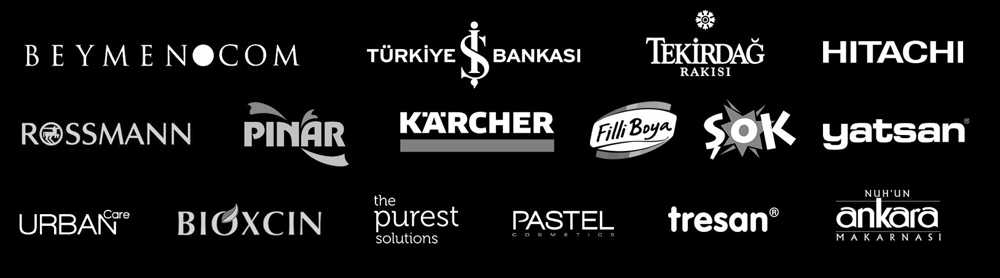

Fotogerçekçi Görsel,
Yapay Zeka Hızında.
ADON Studio, markalar için yapay zeka destekli ürün fotoğrafı, moda görseli ve e-ticaret içeriği üreten bir yaratıcı prodüksiyon stüdyosudur. Tek bir çekimden yüzlerce farklı sahne, ortam ve kompozisyon üretiyoruz.

Ne Yapıyoruz
Yapay Zeka
Destekli
Görsel Üretimi.
Yapay zeka destekli görsel üretimi, geleneksel stüdyo çekimi yerine gelişmiş yapay zeka modelleri ile insan yaratıcı yönetimini birleştirerek ürün fotoğrafı, moda görseli ve e-ticaret içeriği üreten bir yapıdır. ADON Studio'da çıktı hiçbir zaman ham teslim edilmez: yaratıcı yönetmenler, renk uzmanları ve retuş sanatçıları her görseli marka kimliğinize göre işler.
Sentez Metodolojisini İnceleyin →
Üç Temel Çözüm
Nasıl Çalışıyoruz
Brief'ten
Teslime.
Kanıt
Sonuçlar
Konuşur.


Ölçülebilir İş Etkisi
Üretim
Hacminden
Fazlası.
Başarımızı üretilen görsel sayısıyla değil, kampanyalarınızın dönüşüm oranına sağladığımız katkıyla ölçüyoruz.
Konuşmaya Başlayalım →Sık Sorulan Sorular
Yapay Zeka
Görsel Üretimi
Hakkında.
Yapay zeka destekli ürün fotoğrafı nasıl üretilir?
Yapay zeka destekli ürün fotoğrafı, ürünün tek bir referans çekiminden yola çıkarak farklı sahne, ışık ve kompozisyonlarda fotogerçekçi görseller üretir. ADON Studio'da bu çıktılar yaratıcı yönetmen ve retuş uzmanları tarafından marka standardına göre son haline getirilir.
Yapay zeka ile üretilen ürün görselleri gerçek fotoğraftan ayırt edilebilir mi?
İnsan gözetiminde yönetilen bir yapay zeka üretim sürecinde çıktı, profesyonel stüdyo fotoğrafından ayırt edilemeyecek kalitededir. ADON Studio'nun Sentez metodolojisi, yapay zeka çıktısını son haline getirerek bu kaliteyi garanti eder.
Tek bir ürün fotoğrafından kaç farklı görsel üretilebilir?
Tek bir referans çekimden, farklı sahne, arka plan, ışık ve kompozisyonlarda onlarca hatta yüzlerce farklı görsel üretilebilir. Bu, kampanya ve pazar başına farklılaştırılmış içerik ihtiyacını karşılamaya olanak tanır.
E-ticaret markaları için yapay zeka görsel üretiminin faydası nedir?
E-ticaret markaları, ürün kataloglarını hızla genişletmek, mevsimsel kampanyalara uygun görseller üretmek ve farklı pazarlara yerelleştirilmiş içerik sunmak için yapay zeka görsel üretiminden faydalanır. Süreç, geleneksel stüdyo çekimine kıyasla çok daha hızlı ve ölçeklenebilirdir.
ADON Studio ile görsel projesine nasıl başlanır?
İletişim formu üzerinden marka, ürün görselleri ve proje özeti paylaşılır. Ekip önce marka kılavuzunu ve hedefleri değerlendirir, ardından projeye özel bir Sentez planı hazırlar.
İletişim